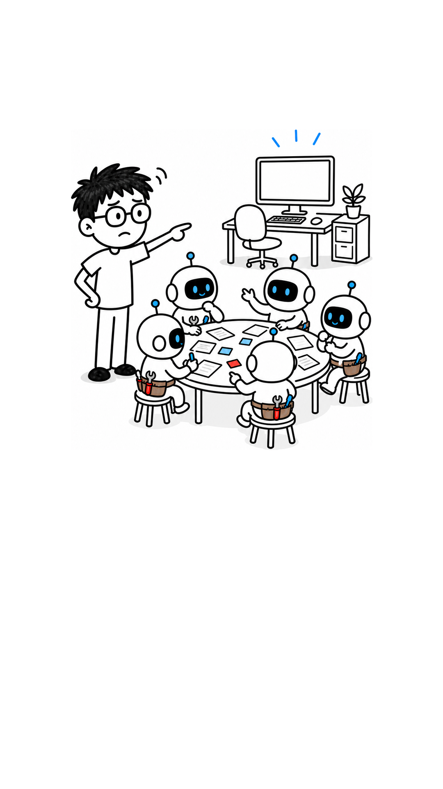
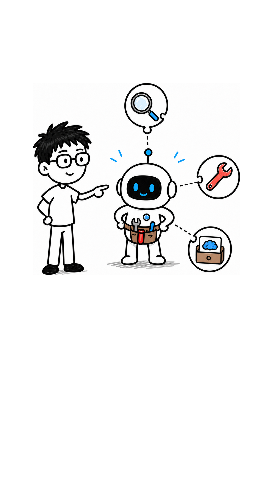
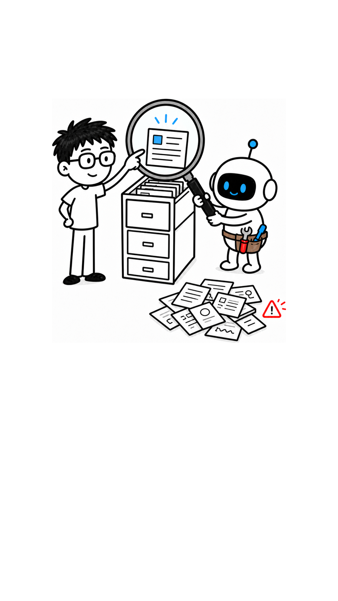

DON'T START WITH
FIVE
01/03

5x
Five agents
in one meeting?
The first step
may be wrong.
AUGMENT
ONE
MODEL
02/03

RETRIEVAL
TOOLS
MEMORY
Basic building block:
augmented LLM
FIND THE
RIGHT FACT
03/03

OUTSIDE FACT
Retrieval finds
outside facts.
TINY AGENT
AUGMENTED LLM / MOTION PASS
HYPERFRAMES SHOWCASE
18.4S · 9:16 · 30FPS